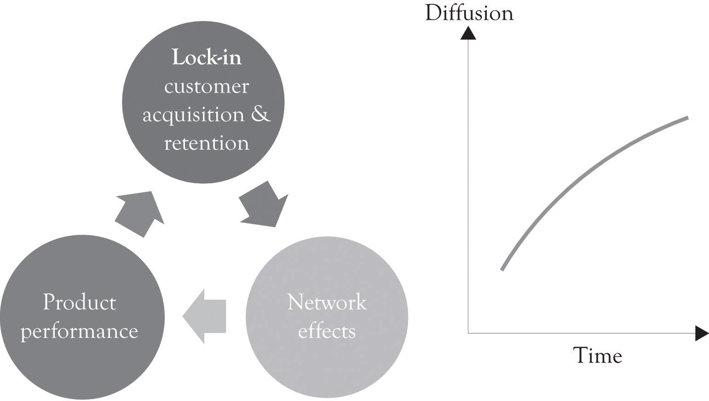

Lock-inOccurs when costs are involved in switching from one product or service to another product or service. also increases the so-called network effect phenomenon. A network effectWhen the value of a good is dependent on the number of customers already owning that good. occurs when the value of a good is dependent on the number of customers already owning that good. Metcalfe’s law states that the value or utility of a network is proportional to the number of users of the network.Shapiro and Varian (1998). In the economics literature, a network effect typically refers to a change in the positive benefit that a consumer receives from a product when the number of consumers of the good increases.Liebowitz and Margolis (1994). Lock-in is also related to Moore’s law, whereby the performance of products always increases over time and the cost of the product stays the same or decreases. This increase in performance is a function of technological developments and learning curve effects. When network effects are combined with increased product performance, product diffusion can increase dramatically and result in exponential market growth and sales (see Figure 10.1 "Growth and Lock-In").
Figure 10.1 Growth and Lock-In
